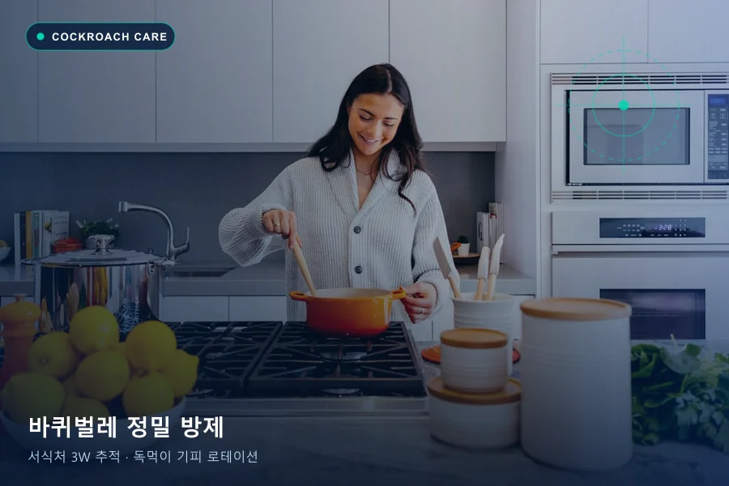
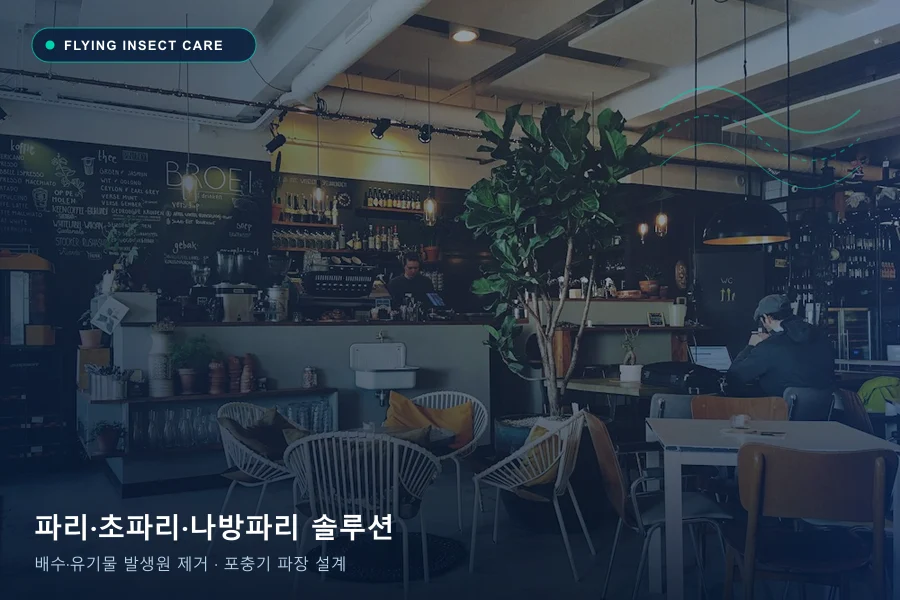
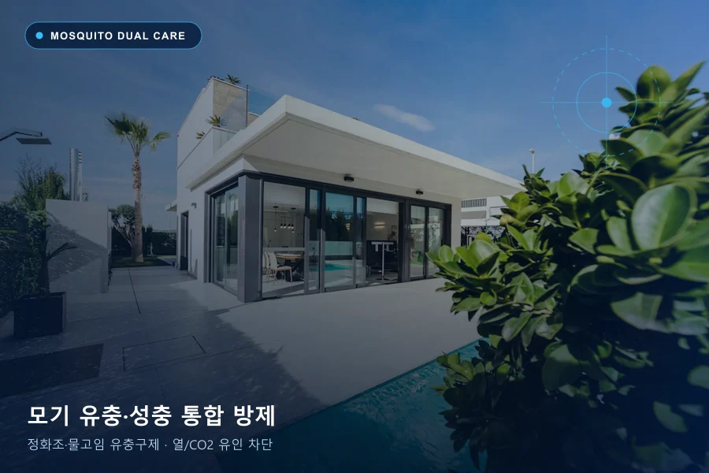

해충과 공간을 함께 이해하는 솔루션
에코플랜은 해충 종류, 건물 구조, 이용자와 운영 환경을 조사해 방제 방법을 정합니다. 발생 원인 확인부터 맞춤 처리, 환경개선과 모니터링까지 연결합니다.
어떤 해충으로 고민하고 계신가요?
각 해충의 유입 경로와 생활사를 고려한 정밀 방제 솔루션

바퀴벌레 맞춤 솔루션
숨은 서식처와 유입 경로까지. 3W 발생 원인 진단부터 서식처 원천 차단과 정기 모니터링까지 체계적으로 관리합니다.

쥐 맞춤 솔루션
침입 차단부터 지속적인 모니터링. 3W 발생 원인 진단부터 서식처 원천 차단과 정기 모니터링까지 체계적으로 관리합니다.

파리·초파리·나방파리 맞춤 솔루션
발생원을 찾아 다시 생기지 않도록. 3W 발생 원인 진단부터 서식처 원천 차단과 정기 모니터링까지 체계적으로 관리합니다.

모기 맞춤 솔루션
성충과 유충, 생활사를 함께 관리. 3W 발생 원인 진단부터 서식처 원천 차단과 정기 모니터링까지 체계적으로 관리합니다.
방역소독은 어떻게 진행하나요?
대상 공간과 표면의 상태, 사용 제품의 적용 범위를 먼저 확인합니다.
대상과 범위 확인
공간 용도와 이용자, 접촉이 잦은 표면, 식품·물품 노출 여부를 확인합니다.
현장별 처리 방법 선정
환경부 허가 3가지 계열 살균제의 용도, 희석 및 적용 방법, 접촉시간 등 표시사항에 따라 작업 계획을 세웁니다.
이용 전 안내
환기, 재입실, 청소 및 접근 제한 등 제품과 작업 방식에 필요한 주의사항을 안내합니다.
소독의 효과와 적용 가능 범위는 대상, 제품, 작업 조건에 따라 달라집니다. 상담 시 관리 목적과 시설 특성을 알려주세요.
사전조사 (3W 진단)
발생 이유(Why)·침입 경로(Where)·활동 시간(When) 3W 정밀 분석
계획수립 (IPM 설계)
해충의 생활사·행동 패턴과 시설 기준에 맞춘 방제 전략·주기 수립
맞춤 방제 & 약제 로테이션
계열별 허가 약제·장비 적용과 환경개선 제안을 동시에 실행
평가 · 사후 모니터링
포획·발생 기록으로 현 수준을 평가하고 재발 방지 기준 고도화